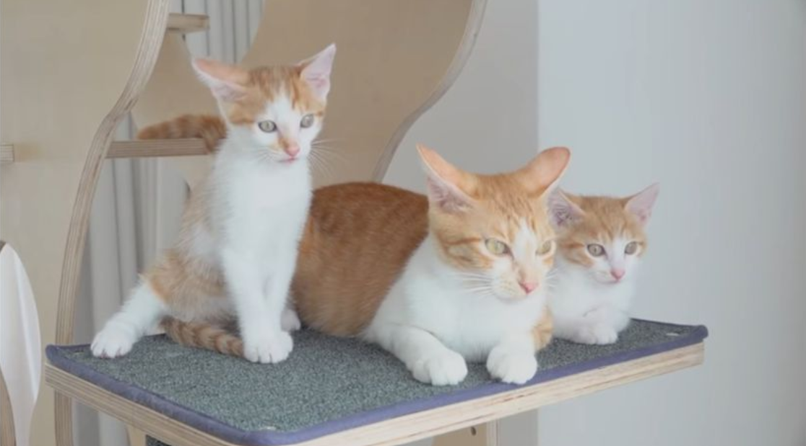
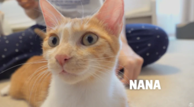
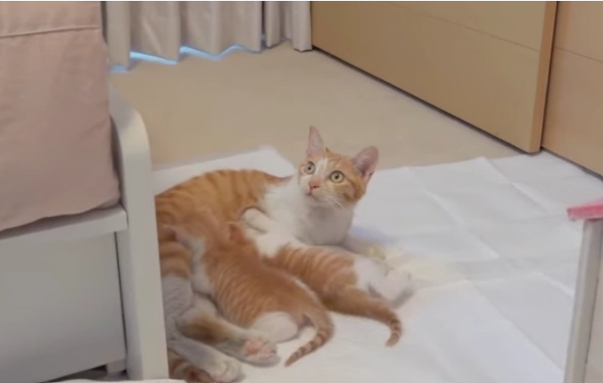

NaNa에 대해서 알아보자.
8. 나나(NaNa)
만 2세
별명: 한라봉, 강아지, 토토, 도도의 엄마
품종: 한국 고양이 / 치즈 태비
집사가 임시보호하다가 입양한 암컷 노란색 치즈태비 한국 고양이



☆ 길고양이 출신이라는 게 믿기지 않을 정도로 사람에게 친화적인 개냥이다. 임시보호 며칠만에 크집사가 토토, 도도를 쓰다듬었는데 이 때 경계심은 커녕 자기도 쓰다듬어달라고 머리를
들이미는가 하면, 새끼가 사고를 치면 집사에게 도와달라고 야옹거리는 모습을 보여준다.
☆ 디디를 유독 좋아하는지 졸졸 따라다니는 모습을 자주 보여준다. 중성화 수술 때문에 병원에 갔을 때도,
김재영 수의사의 반려묘 샤론을 처음 봤음에도 대뜸 야옹을 하면서 다짜고짜 코인사를 하는 적극적인 모습을
보여주었다. 사람, 고양이 가릴 것 없이 낯가림이 전혀 없는 매우 사교적이고 상냥한 성격의 고양이.
☆ 다른 고양이들과도 무난하게 잘 지내는 것 같지만 어미 고양이라 그런지 다른 고양이가 새끼들에게 야옹거리면
둘 사이를 막아서기도 한다. 루루가 도도에게 야옹거리자 바로 달려와서 둘 사이에 엎드려 누웠다. 하지만 그냥
루루가 좋아서 붙었을수도 있다.
☆엄마 고양이라 그런지 토토와 도도를 매우 아낀다. 가장 막내였던 루루보다 어린 나이에 임신과 출산을 겪다
보니, 더욱 애정을 가진 듯하다.
☆나나에 대해 더 자세히 알아보러 가기☆